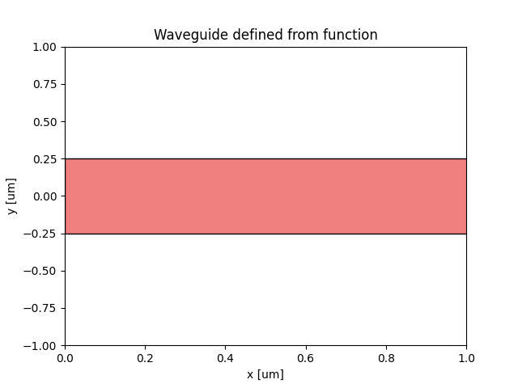
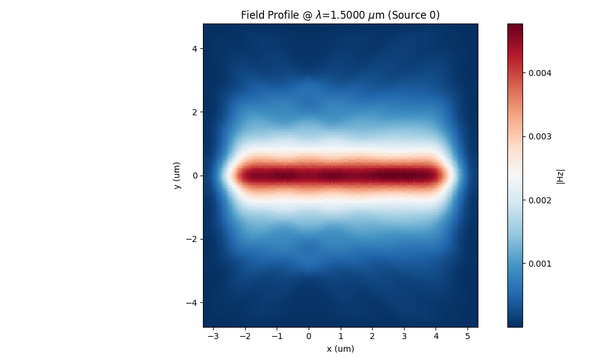
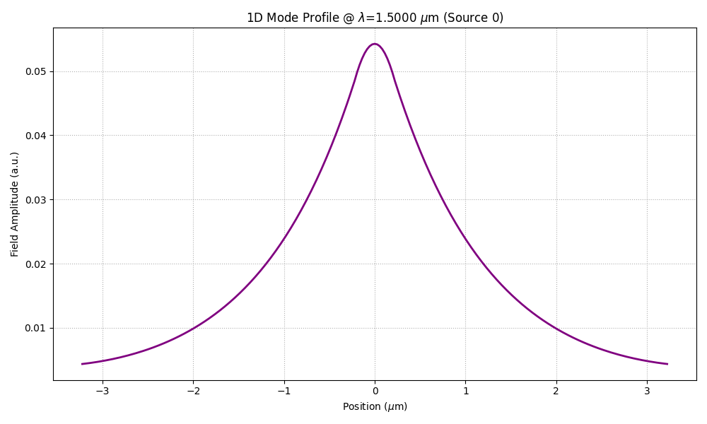
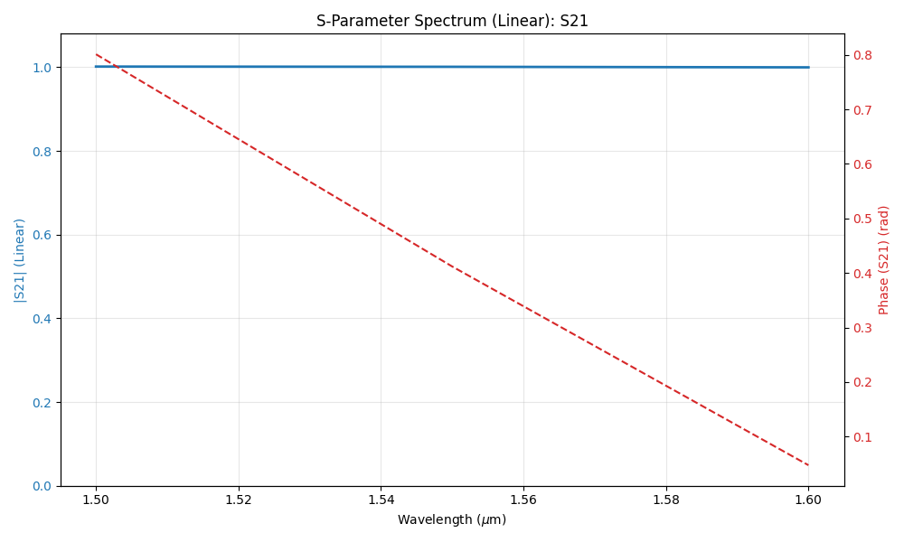
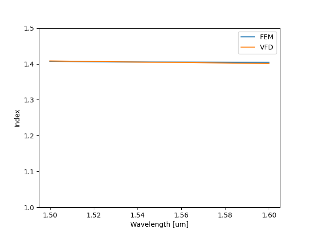

2.5D simulation of Waveguide
This examples shows how to use FEM 2.5 D capabilities in simulating photonic devices and get results close to the 3D models. The example also shows how to simulate a device defined by a custom function
The simulation setup in the code snippet below. In this example, TM polarization is used.
from pyModeSolver.pyModeSolver import VFDModeSolver
from pyOptiShared.LayerInfo import LayerStack
from pyOptiShared.DeviceGeometry import DeviceGeometry
from pyOptiShared.Material import ConstMaterial
import gdstk
import numpy as np
import matplotlib.pyplot as plt
from matplotlib.patches import Polygon
from FEMFy.FEFDSolver import FEFDSolver
from pyOptiShared.Simulator import PML_Params,Mesh
from pyOptiShared.OptiShared import CalculateGroupIndex
##########################################
### Waveguide function ###
##########################################
def waveguide(port_width=0.4,waveguide_length=1.00,input_port_center=(0,0),layer=1):
vertices=[(input_port_center[0],input_port_center[1]-(port_width/2)),
(input_port_center[0]+waveguide_length,input_port_center[1]-(port_width/2)),
(input_port_center[0]+waveguide_length,input_port_center[1]+(port_width/2)),
(input_port_center[0],input_port_center[1]+(port_width/2))]
return [(vertices,layer)]
##########################################
### Material Settings ###
##########################################
substrate_mat = ConstMaterial("SiO2", epsReal=1.44**2, epsImag=0.0)
core_mat = ConstMaterial("Si3N4", epsReal=1.99**2, epsImag=0.0)
##########################################
### Layer Stack Settings ###
##########################################
layer_stack = LayerStack()
layer_stack.AddLayer(number=1,material=core_mat, thickness=0.22, zmin=0, sideWallAng=0, cladding="Air_default")
layer_stack.SetBGandSub(background=substrate_mat, substrate=substrate_mat)
parameters=(0.5,2.00,(0,0),1) # (port_width,waveguide_length,input_port_center,layer)
##########################################
### Visualize the waveguide ###
##########################################
WG1=waveguide(*parameters)
vertices=WG1[0][0]
fig, ax = plt.subplots()
polygon = Polygon(vertices, closed=True, facecolor="lightcoral", edgecolor="black")
ax.add_patch(polygon)
plt.ylim([-1,1])
ax.set_xlabel('x [um]')
ax.set_ylabel('y [um]')
ax.set_title('Waveguide defined from function')
##########################################
### Device Geometry/Port Settings ###
##########################################
device_geometry = DeviceGeometry()
device_geometry.SetFromFun(layer_stack=layer_stack,
func=waveguide,
parameters=parameters,
buffers={'x':1.5,'y':4,'z':1.5})
device_geometry.SetAutoPortSettings(direction='x',min=0,max=0.6,port_buffer=3.0,pad=False)
##########################################
### ModeSolver Settings ###
##########################################
mode_solver = VFDModeSolver()
mode_solver.SetBoundaries(min_x = "pmc", max_x = "pmc",
min_y = "pmc", max_y = "pmc")
lams=np.linspace(start=1.5,stop=1.6,num=3)
mode_solver.SetSimSettings(device_geometry = device_geometry,
mesh={"dx": 0.02,"dy": 0.02, "dz": 0.02},
wavelength=lams,
nguess = 2.1,
nmodes = 1,
cut_plane = "YZ",
cut_location = 0.0,
tol = 1e-8,
results_path = "./ModeResults",
device_name = "my_results")
##########################################
### Run and Results Visualization ###
##########################################
mvd_results = mode_solver.Run()
print(mvd_results.Polarity(1.5))
#mvd_results.PlotMode(field='Hy') # Fundamental Mode Profile
Neff=mvd_results.neff.Get('neff')[0]
lam=mvd_results.neff.Get('wavelength')
#data=np.column_stack((lam,Neff))
#print(data)
##########################################
### Mesh Settings ###
##########################################
fem_mesh=Mesh(dx=0.02,dy=0.02,dz=0.02)
fem_mesh.SetMeshOptions(mode='quiet',gui=False,export=True)
##########################################
### FEFDSolver Settings ###
##########################################
fefd_solver = FEFDSolver()
pml=PML_Params()
pml.SetPMLParameters(thickness=[1.8,1.8,0.5,0.5],profile=2,kappa=1,sigma=[2,2,1.5,1.5],alpha=0.00)
fefd_solver.SetBoundaries( min_x = "pml",
max_x = "pml",
min_y = "pml",
max_y = "pml",
params=pml)
fefd_solver.SetExcitation(wavelength=lams,
reciprocity='1x1')
fefd_solver.SetSimSettings(device_geometry = device_geometry,
mesh=fem_mesh,
method = 'direct',
polarization='TE2.5',
number_iterations=2
)
fefd_results = fefd_solver.Run()
fefd_results.PlotField()
#fefd_results.PlotNeff()
fem_lam=fefd_results.GetNeffData()[0]
fem_neff=fefd_results.GetNeffData()[1]
VFD_ng=CalculateGroupIndex(lam,np.real(Neff))
FEM_ng=CalculateGroupIndex(fem_lam,np.real(fem_neff))
fefd_results.PlotPort()
fefd_results.PlotSParameters(s_param="S21")
plt.figure()
plt.plot(fem_lam,np.real(fem_neff),label='FEM')
plt.plot(fem_lam,np.real(Neff),label='VFD')
plt.ylim([1,1.5])
plt.legend()
plt.xlabel('Wavelength [um]')
plt.ylabel('Index')
plt.show()
Waveguide plot
The code first starts by defining a waveguide from a function and plot it which looks like this
{kind=link}

Then the code starts a mode solver instance to simulate the cross-section of the waveguide.
Field profile
The code should produce a field profile that looks like this
{kind=link}

Field profile
The code also plots the 1D field profile of the input port.
{kind=link}

Transmission S21
The code also plots the S21 transmission parameter.
{kind=link}

Effective index comparison
The code also plots a comparison between the effective index of the mode solver and the effective index computed with the 2.5D approximation.
{kind=link}
